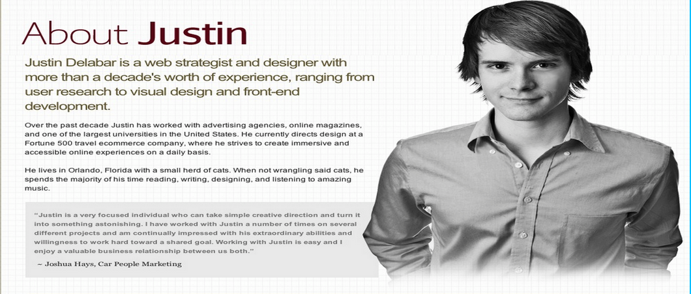
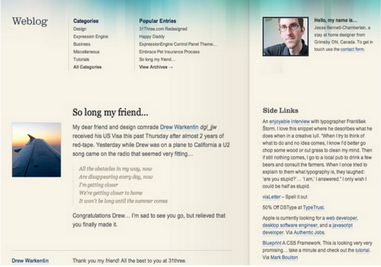
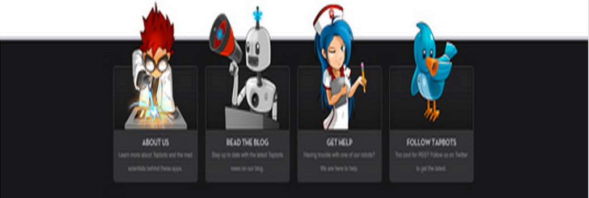

Go to Header
Header:
Target Audience:
The Design Superhero is a website that helps you build websites and add certain features to your websites. This website targets ages from 20 - 45. It mainly focuses on people that wants their own websites, whether that's for a business or personal use.
Client/User Needs
I believe the clients goal is for customer service. The navigation is set up inside the header background picture which causes the user to interact with the website and want to click the arrows. I believe the design of the background is there to drag the user in and get them to explore more of the website and potentially use their website for what it's intended for.
Critique
I think the design is good. I think the whole purpose is to get the user to navigate. They could have just set up a nav bar, but they didn't. They made it a more creative way to get the users attention. Creative appearances has been known to get a website more business. They chose bright colors for the arrows because the background is a dark color, so the bright colors stand out very well. The dark blue represents importance and stability, while the other colors are secondary colors that make the website pop.
Go to Login/Registration
Login/Registration:
Target Audience:
The target audience of this website is for any age preferably for ages 18-35. This website focuses on a large collection of tutorial videos of all kinds. I believe this age group would search the web the most for tutorial videos.
Client/User Needs
The client goal is to get the user to sign in or sign up for an account. The user is focused on logging in so they can look up videos.
Critique
I think the form is great. The theme of the website is green, white, and blue. Green is great for this website because it's a soothing, natural color that shows renewal and abundance. Green also has an energetic feeling to it. The blue signifies trust and gives this safe feeling. It makes perfect since to put that trust feeling where the user is going to register. It makes the user feel more comfortable before registering for an account. I think the keys also are there to make the user feel safe. It's showing that the user is safe to login and not have to worry about someone else being on their account. It gives the user a feeling of protection.
Go to Sidebar
Sidebar/Nav:
Target Audience:
This website focuses on ideas and creativity. I believe the target audience is the younger generation, 20-40, because their full of ideas.
Client/User Needs
The clients goal is to give the user a big sidebar that the user can navigate from. The client made the nav large enough so there is no trouble finding it. The user will use this sidebar to navigate throughout the website.
Critique
The sidebar is black which indicates power and mystery. It gives the user a since of control which is good because it is a navigation after all. The logo is orange, which is good because it pops out on the dark background, it commands attention. Every website wants their logo to be easily seen and that's what the color orange is doing here.
Go to About
About:
Target Audience:
This website targets mainly web designers, ages between 25 - 45.
Client/User Needs
The client is trying to get the user to understand where he came from and what kind of background he has. The user could be wanting to know what kind of person the client is and what experience he has before exploring his website even more.
Critique
I think this is a good about page. I like the picture the client put of himself. It shows that he is really trying to get the users to understand who he is and it helps the user connect to the client. White is a great color to have in the container because white shows purity, cleanliness, and virtue. I think this is just another way for the client to connect with the user and help the user connect to the client. The tan in the background is a neutral color. It is often used as a background because it takes on the colors around it. It has little impression on the website as a whole. I like the grey in the design because it shows professionalism and that's what this about page is all about.

Go to Contacts
Contact:
Target Audience:
The target audience is anyone interested in a web application preferably, 25 - 45 years of age.
Client/User Needs
The client goal is to show the user their location in a different and unique way. The user is wanting to find out the contact information of this company.
Critique
I think this contact page is simple, but unique. A lot of people use maps to show their location, but this company uses a more in depth map to show their location. Your looking from a sky view which unique and you can actually see details on the map to help reference where they are. Their address is written over a maroon color, which is smart because it helps the font pop out, since the color of the font is white. The maroon color also draws to a point to show the specific location which allows the user to know exactly where the client is located.
Go to Blog
Blog:
Target Audience:
This website targets designers, ages 20 - 40.
Client/User Needs
The clients goal is to have people interact with each other and start a blog. The users goal is to read the blogs and write a message, or start their own blog.
Critique
This blog has a neutral tan background. Tan is a neutral color which takes the effect of other colors. In this case the only other color is blue and maybe a hint of green. Blue symbolizes trust, which is good for a blog. Green is a soothing color that can be a little energetic. This blog has a nice flow to it. The header blends into the container, which causes a blend of the blue and tan. I think the client did this to help the eye movement to flow from the header to the container. The blog has a category section and underneath is the actual blog. On the right hand side is a sidebar that has the the bloggers information and more links. I think this website is organized and neat because of simple structure.
Go to CTA
CTA:
Target Audience:
This CTA targets all audiences that get on a computer, ages from 15-50.
Client/User Needs
The clients goal is to get you to click on the download button and use their software. The user will be deciding if they want this web browser or not.
Critique
I think this is a good cta because it's not to over the top. It's relatively simple. Their logo is in the top left corner and also on the download button. The logo is big and easy to see. Firefox is a big and popular company. The more you see their logo the better chance you will download from them. I think the text is important and it goes well with the color of the background. The text says that they are committed to you, which introduces trust. They also say they are committed to your privacy and the web. Privacy is a big issue people have. They want there information secured. This is another way Firefox introduces trust. The saying goes great with the color because blue is another color that makes a user feel comfortable and implies trust.
Go to Features
Feature:
Target Audience:
The targeted audience anyone with a computer, ages between 15-50.
Client/User Needs
The clients goal is to get the user to click on one of these social media icons. The user would use these icons to log on with or to share something from the website on their social media.
Critique
This website has a feature that a lot of websites have, which is social media integration. If a user clicks on the social media icons it will take the user to the business's social media page. I like the position of the icons because it's out of the way. When you read the website it doesn't bother you or get in the way. Once you read to the bottom of the page you will see and have your chance to look at their social media pages. The background of the website is tan, which is a neutral color. Since the background is a neutral color it makes these icons pop out much more and easy to see.
Go to Footer
Footer:
Target Audience:
This is a website that targets web and mobile developers, ages 25 - 45.
Client/User Needs
The clients goal is to get you to click on one of the icons in the footer and explore more of their website. These pictures will catch the users attention and let the user know how to explore more of the website.
Critique
This website is a site about the people who make apps that come on apple products. This footer is different from most footers because instead of just text it has pictures to go with the texts. The picture allows the user to get a better idea of what they are clicking on. The footer contains mostly neutral colors. The submit button is red which makes it stands out. The dark colors represents power and lets you know you are in control of what topic to choose. The pictures grab your attention because they look like they pop out from the footer and overlap onto the container.